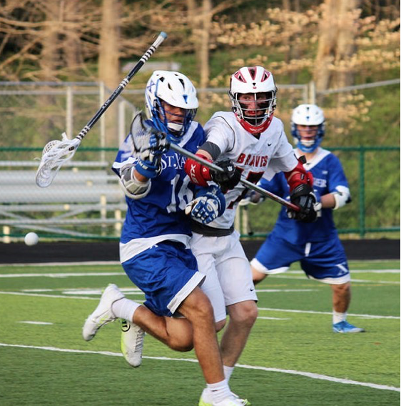
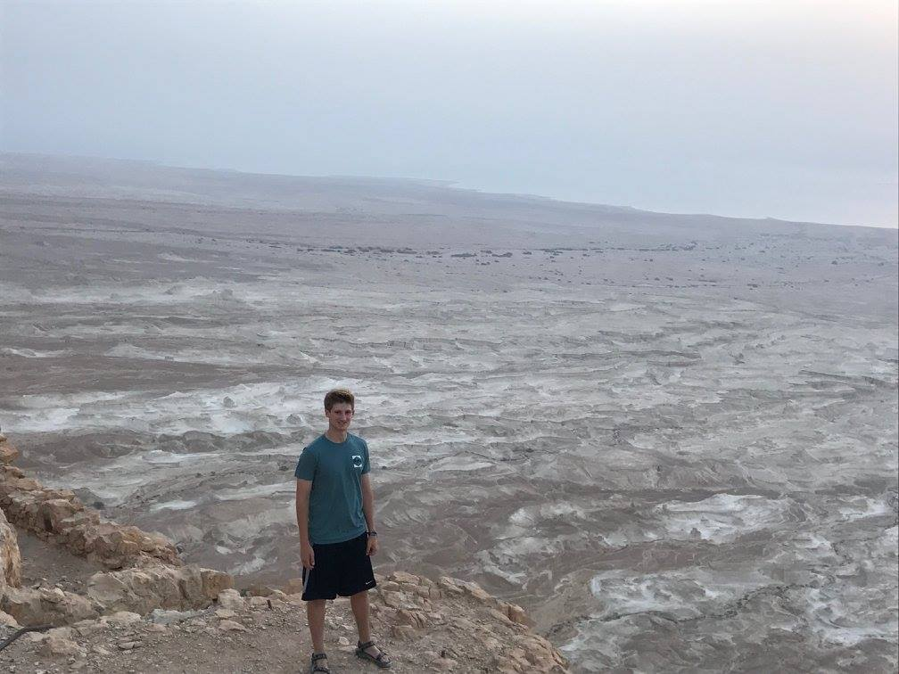
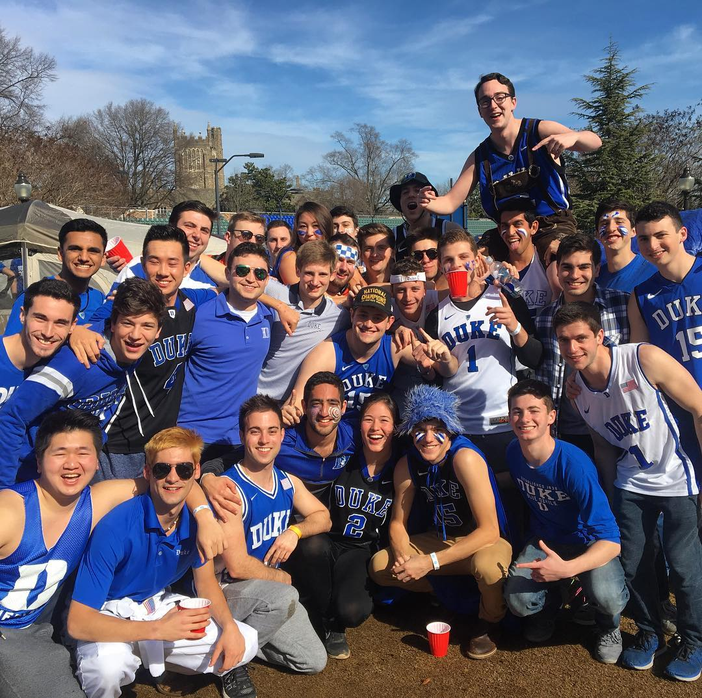

Jacob Young
I am from Cincinnati, Ohio. I gradated as the Salutatorian from Indian Hill High School and am now attending Duke University. I am scheduled to graduate in 2020. I am interested in transporation, fintech, the internet of things, coffeetech, and startups overall. I have experience ranging from data analytics, software engineering, finance, to business development. I specialize in improving existing products and creating new products.
Experience
Data Analyst Intern
Revamped data analytics for portfolio company and Series A real estate startup funded by Jackson Square Partners and Lerrer Hippeau
Venture Intern
Conducted market research for active portfolio companies and due diligence for prospective companies at Seed Stage VC with investments in Pendo, Mati Energy, and Distil Networks
Software Engineering Intern
Developing, expanding, and redesigning analytics platform for Seed Stage and Linux Foundation building automation startup funded by Innogy Innovations

Software Development Intern
Developed and automated POS integrations collecting data from over 1000 bars on 4 different continents for beverage data analytics startup \item Generated reports and insights for BI and data management teams utilizing SQL
Leadership
Freestyle Fellow
1 of 7 summer fellows selected by Freestyle Capital, VC with a current $90 mm fund and previous investments in Intercom, Patreon, Airtable, and Wag

Director of Consulting
Coordinates consulting for invested startups. Discovers companies to offer pro-bono consulting services.

Employer Ambassador
Facilitates and manages recruitment events for Fuqua students. Has managed events ranging Fortune 500 CEO visits to Startup founder talks.
![Cinque Terre]()
Education
Duke University
GPA: 3.65
Indian Hill High School
GPA: 4.85
Skills
Interests
Lacrosse
Click here for some highlights of a washed up all-region LSM. I still play club at Duke.
Backpacking
During my work abroad, I have spent a lot of time in hostels. Here are my friends from Sevilla.

Hiking
I enjoy nature, beaches, and going on hikes. Here is my hike from Masada.
Surfing
A newfound interest from living in Southern California for a few months.

World Affairs
I have worked on campaigns and have interned at the Mayor of Cincinnati's Office.
College Sports
March is my favorite month.
Awards & Certifications
- Top 10 Duke Startup Challenge
- 14th Place - Academic World Quest Nationals
- 2nd Place - Western Ohio National Geography Olympiad
- 3rd Place - Western Ohio History Bee
- Kentucky Colonel - Awarded by Gov. Beshear
- Cincinnati Rotary Youth Leadership Award
- Indian Hill Historical Society Grant